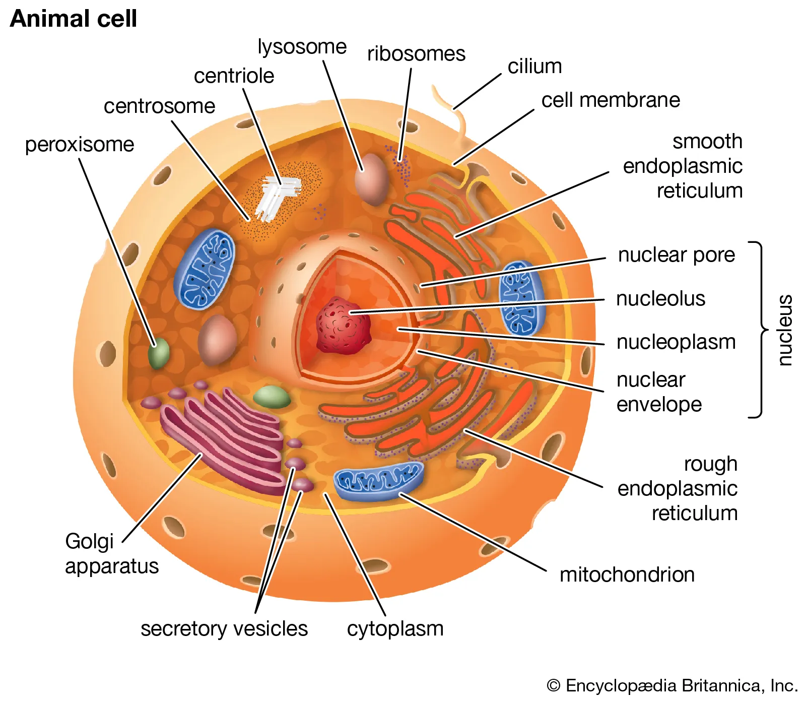

Explore the Cell
Discover organelles and understand how they work together.
Enter the CityCell City
Discover how organelles work together through an interactive, city-based model of biological systems.

Cell City represents a biological cell as a small, functioning city. Every organelle takes on a matching civic role — the nucleus governs like city hall, mitochondria generate power like plants, and the Golgi apparatus packages and ships goods like a distribution center.
As you explore, you'll follow real biological processes — DNA transcribed into RNA, RNA translated into protein, nutrients converted into ATP — mapped onto the same systems that keep any city running.
Cell → City
Discover organelles and understand how they work together.
Enter the CityAnalyze DNA sequences and explore molecular information.
Enter the LabTest your knowledge through interactive biology challenges.
Start a MissionStart with the cell and discover how its microscopic systems work together.
Enter the City